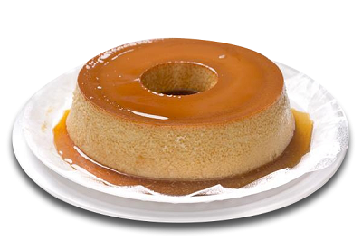

Pudin de leite Condensado
Ingredientes
-
PUDIN:
- 1 lata de leite condensado
- 1 lata de leite (medida da lata de leite condensado)
- 3 ovos inteiros
-
CALDA:
- 1 xícara (chá) de açúcar
- 2 xícaras de água
Modo de Preparo
-
PUDIN:
- Primeiro, bata bem os ovos no liquidificador
- Acrescente o leite condensado e o leite, e bata novamente
-
CALDA:
- Derreta o açúcar na panela até ficar moreno, acrescente a água e deixe engrossar
- Coloque em uma forma redonda e despeje a massa do pudin por cima
- Asse em forno médio por 45 minutos, com a assadeira redonda dentro de uma maior com água
- Espete um garfo para ver se está bem assado
- Deixe esfriar e desenforme